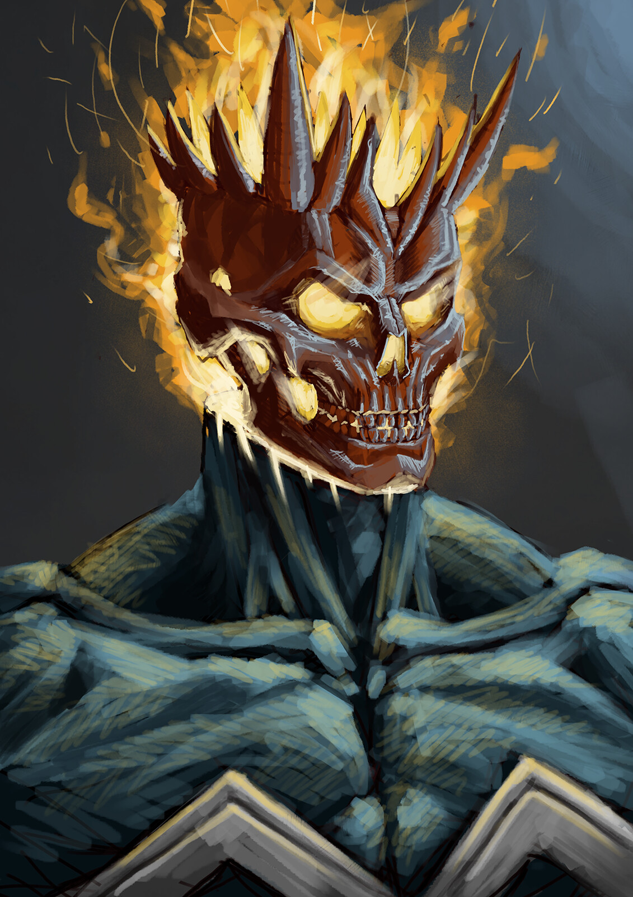
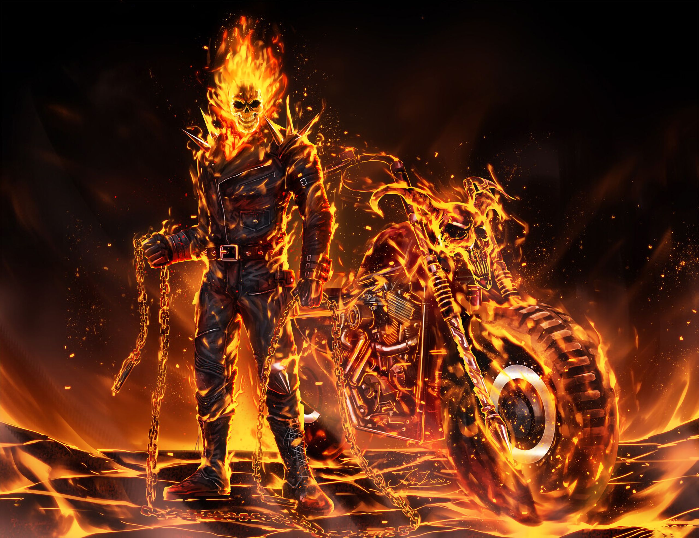

Ghost Rider


A reaper of souls.
The Ghost Rider is a human who can transform into a skeletal superhuman wreathed in ethereal flame and given supernatural powers. The abnormal motorcycle he rides can travel faster than any conventional vehicle and can perform seemingly impossible feats such as riding up a vertical surface, across water, and leaping across great distances that normal motorcycles cannot. The Ghost Riders are virtually indestructible and notoriously hard to injure by any conventional means, as bullets and knives usually pass through them without causing pain (knives are shown to melt while in their body).[8] It is possible that they are genuinely immortal, as it is said that God created them and only God can destroy them.[9] Despite being composed of bone and hellfire, the Ghost Riders possess formidable superhuman strength, enough to easily pick up a truck and hurl it across a road. It has been stated that Johnny Blaze as Ghost Rider can press around 25 tons (50,000 lbs) (or more as seen in World War Hulk).[10] Each Ghost Rider entity also had abilities specific to him or her.
Learn more about Ghost Rider